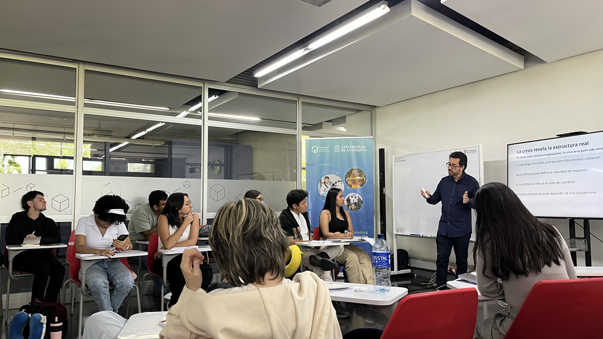
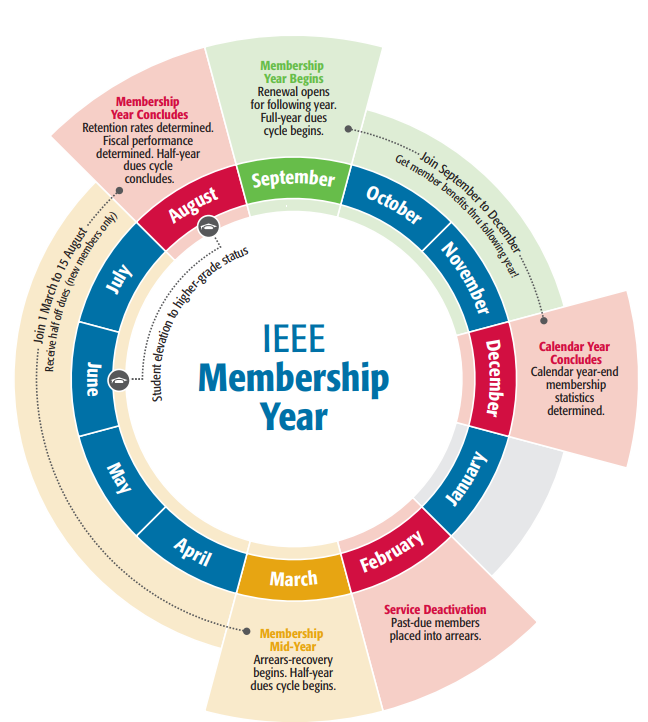

Filosofía de Liderazgo y Rol del Presidente
Asumir la presidencia de una Rama Estudiantil o Capítulo Técnico implica gestionar equipos, coordinar actividades y mantener la continuidad operativa de la unidad organizativa.

Principio de Trabajo en Voluntariado
El trabajo dentro de IEEE es un voluntariado basado en la motivación, la asignación clara de funciones y la coordinación de equipos. La dirección debe ser colaborativa para evitar la sobrecarga de trabajo en un solo directivo.
Responsabilidades Principales
- ✓Dirección General: Establecer el plan de trabajo anual junto con la junta directiva.
- ✓Enlace Institucional: Representar a la unidad ante las autoridades de la universidad, el Consejero, la Sección IEEE local y el SAC Regional.
- ✓Cumplimiento Normativo: Verificar la entrega oportuna de informes y el cumplimiento de los estatutos oficiales.
- ✓Continuidad: Promover la formación de nuevos líderes dentro de la membresía para las siguientes elecciones.
Los Primeros 30 Días: Procedimiento de Empalme
La transferencia de información entre la junta saliente y la entrante se organiza en tres fases consecutivas para asegurar el traspaso ordenado de la unidad.
A. Documentación
El equipo saliente debe entregar:
- 1Credenciales de vTools, eNotice, web y redes sociales.
- 2Cuentas bancarias o firmas autorizadas.
- 3Actas, estatutos locales y plan anual previo.
B. Reunión de Traspaso
Sesión de trabajo entre ambas juntas para revisar el estado financiero, explicar los procesos pendientes y mostrar el uso operativo de vTools.
C. Activación Entrante
Acciones prioritarias de la junta nueva:
- 1Actualizar directivos en vTools.OfficerReporting.
- 2Subir el Plan Anual.
- 3Registrar el primer evento en vTools.
IEEE Membership Year
Línea de tiempo y estados oficiales del ciclo anual de membresías de la organización. Es mandatorio para todo el ExCom comprender este calendario para prever las renovaciones y evitar la desactivación de servicios en la plataforma.

Comité Ejecutivo (ExCom) y Funciones
La asignación clara de tareas dentro del Comité Ejecutivo evita la duplicidad de funciones y asegura el funcionamiento operativo de la rama o capítulo.
| Cargo | Responsabilidad Operativa | Impacto Directo |
|---|---|---|
| Presidente | Dirección general, representación institucional, seguimiento de compromisos. | Coordinación general del plan anual. |
| Vicepresidente | Coordinación de comités de trabajo y seguimiento a capítulos técnicos/grupos de afinidad. | Soporte operativo y sucesión de cargo. |
| Secretario | Redacción de actas, custodia de archivos, correspondencia y reportes administrativos. | Mantenimiento del historial documental. |
| Tesorero | Elaboración del presupuesto, administración de ingresos, egresos y comprobantes. | Gestión financiera y balance de cuentas. |
Plataformas Digitales de Gestión
IEEE dispone de herramientas centralizadas para el reporte de actividades, administración de miembros y capacitación.
vTools
Plataforma principal utilizada para actualizar la junta directiva (Officer Reporting), publicar eventos (Events / L31) y realizar votaciones oficiales (eBallot).
OU Analytics (SAMIEEE)
Acceso disponible para Presidentes y Consejeros. Permite consultar la lista actualizada de miembros, analizar estadísticas y revisar renovaciones pendientes.
IEEE eNotice y Collabratec
eNotice envía convocatorias por correo electrónico a los miembros de la sección. Collabratec es la red de interacción y trabajo técnico de la organización.
Center for Leadership Excellence (CLE)
Módulos de capacitación en línea diseñados para la instrucción operativa de cada cargo dentro de la junta directiva.
Calendario Anual y Proceso Electoral
Las elecciones deben ejecutarse de manera transparente siguiendo las fechas establecidas en la planificación de la sección.
Cronograma del Proceso Electoral
- Mayo – Junio: Inicio de la preparación de la convocatoria electoral.
- 1 de Agosto: Apertura oficial de postulaciones (mínimo 30 días activas).
- Octubre – Noviembre: Votación a través de vTools eBallot (mínimo 2 semanas).
- 15 de Diciembre: Publicación de resultados e inicio de reuniones de empalme.
Organización de Eventos y Financiamiento
Para la ejecución de actividades de mayor escala (como seminarios, talleres o eventos SPAC) se recomienda estructurar comités temporales de trabajo.
Comités Operativos de Eventos
- •Comité Organizador y de Finanzas.
- •Comité de Logística y Servicios Generales.
- •Comité de Ponencias e Invitados.
- •Comité de Contingencias.
Fuentes de Financiamiento
- •Rebates Anuales: Asignación enviada por MGA tras reportar actividades y directivos a tiempo.
- •Fondos SPAC: Apoyo económico para conferencias de desarrollo profesional.
- •Subvenciones: Programas EPICS, HAC o SIGHT para proyectos aplicados.
Resolución de Dudas y Jerarquía
Ante consultas operativas o administrativas, la junta directiva debe seguir la cadena de contacto correspondiente:
1. Nivel Local
Consulta inicial con el Consejero de la Rama (Branch Counselor) y el Mentor.
2. Nivel Sección
Contacto con el Presidente de Actividades Estudiantiles (SSAC) y el Representante Estudiantil (SSR).
3. Nivel Regional
Consultas al equipo R9 SAC Team (RSAC y RSR).